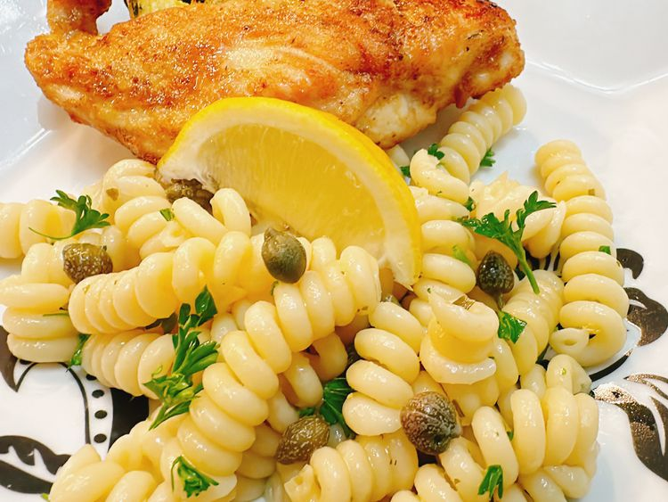

Home
Lemon Caper Pasta

Credit: Allrecipes
Description
This zesty lemon caper pasta makes a beautiful side dish and pairs beautifully with poultry or white fish to make a simple yet elegant meal.
Ingredients
- 1 pound rotini pasta
- 5 tablespoons unsalted butter
- 2 cloves garlic, minced
- 1 tablespoon all-purpose floour
- 1 teaspoon chicken bouillon paste
- 1 lemon, juiced
- 3 tablespoons capers
- 2 tablespoons finely chopped fresh parsley
- salt and feshly ground black pepper to taste
Steps
- Fill a large pot with lightly salted water and bring to a rolling boil.
Stir in pasta and return to a boil. Cook pasta uncovered, stirring occatsionally, until tender yet firm to the bite, 8 to 10 minutes. Reserve 1/2 cup pasta water, then drain pasta and set aside.
-
Melt 1 tablespoon butter in a skillet over medium heat. Add garlic; fry until fragrant, about 1 minute. Add remaining butter and melt, then sprinkle in flour. Whisk to combine; cook for about 1 minute.
-
Whisk chicken soup base into reserved pasta water; pour into skillet. Whisk to make a smooth sauce. Whisk in lemon juice, 1 tablespoon at a time, to taste. Stir in parsley and capers. Season with salt and pepper. Allow to simmer until sauce thickens, about 2 minutes.
-
Toss sauce with drained pasta.